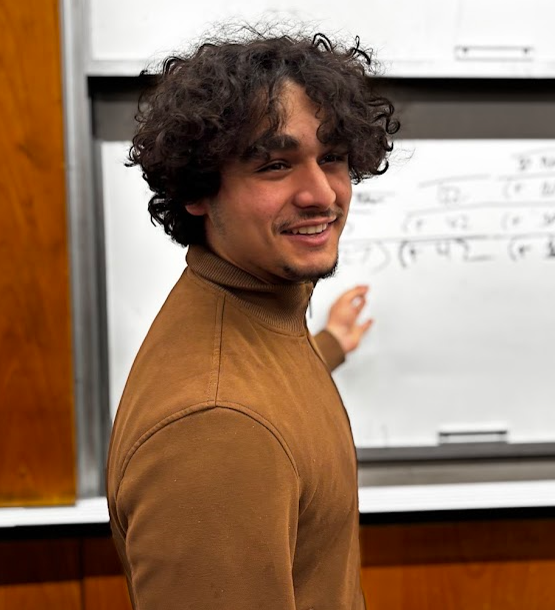
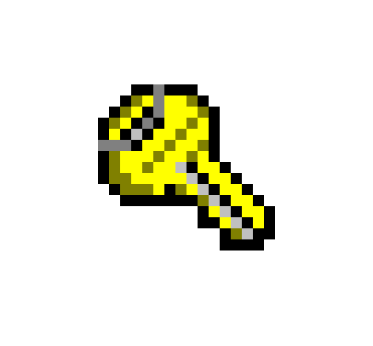

Ryan Raschkovsky

1 About Me:
Hello! My name is Ryan Raschkovsky, and welcome to my website!
I’m an undergraduate at Northeastern University in Boston, where I am currently studying for a BS in Cybersecurity.
I’m currently certified as an FCC Technician for Amateur Radio and am studying multiple languages including Greek, Japanese, Mandarin, and toki pona!
Here’s where you can check out what I’m working on
When I’m not doing any projects, you can find me building drones, teaching Portuguese, or Distribution Hopping!
2 Contact
Feel free to reach out to me!
| |
| |
| |
 |
This site was written in Scribble. Check it out here |